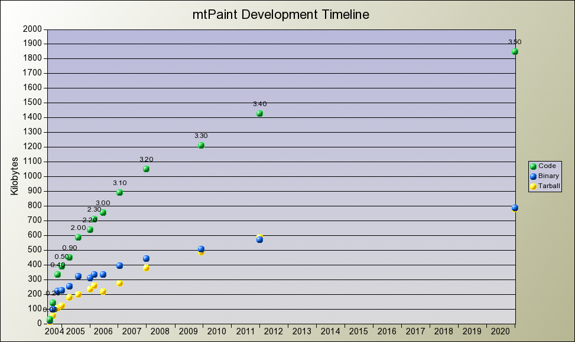
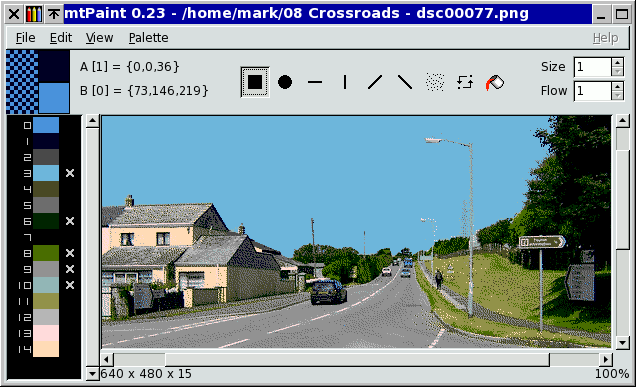

I decided to write this handbook to help all mtPaint users get the most out of the program. Like all software, mtPaint is a tool, and in order to use it efficiently you will need to study what it does, and how it works. If you wish to understand some of the design decisions I have taken, you may be interested to read about why I created mtPaint.
I first became interested in painting programs and computer graphics in 1984. Like many youngsters of that era, computers interested me because of computer games and creative hobbies like programming, art and music.
I first saw AMX Art on the BBC Micro at about this time, and then AMX Super Art soon after. In 1988 I started using Neochrome on the Atari ST, and then a year later I used the Animatic Sprite Master, which I enjoyed because I could experiment with animation.
During the 1990's, I started exploring new 24 bit RGB editing programs. Although these were great for editing photos, I became frustrated with their poor support for palette based images and pixel art. As a response I wrote a few small painting programs to fill the gap, but sadly I didn't have the time or the will to develop these properly until 2004.
On the 4th July 2004 I decided to start thinking about creating my own painting program for use on my GNU/Linux systems. For a few weeks I did consider using other free painting programs as a starting point, but I decided that my goals were not consistent with anybody elses and it would be better to start from scratch.
I started the programming work on 7th August 2004 and released a usable version to the public on 13th September 2004. This rapid development was only possible after I used and studied an excellent program call mhWaveEdit, written by Magnus Hjorth, in the Spring of 2004. As well as being an extremely good wave editing program, I also learnt many valuable lessons from this program.
For example, to keep mtPaint portable I designed it to use the GTK+ toolkit, version 1 or 2. This means that it will work on most free operating systems, even if they are many years old and working on older hardware with fewer CPU and memory resources.
I have always wanted mtPaint to be small, reliable, fast, and easy to use, as I think these are the qualities which will give me the best painting tool for my needs. However, mtPaint isn't a corporate effort, and it isn't a clone of another program so it may not conform to everybody's painting needs.
An important decision I have taken with mtPaint is to release it as free software using the GNU General Public License. This gives all mtPaint users various freedoms which are beneficial to both them and myself. If you are not aware of these freedoms and the work of the GNU project, I would strongly encourage you to read about them here: http://www.gnu.org/. As a result of using this license for mtPaint, many people have been able contribute ideas and source code that has improved the program.
The mtPaint project has grown and developed steadily through its lifetime. Here is a graph that depicts its progress:

Version 0.23 was the first public release, and it looked like this:

During the first 3 months of development I was only interested in developing an indexed palette painting program, so I totally ignored RGB image support. At this embryonic stage there were only a few tools available so a very basic user interface existed. The most important thing for me at this point was to get the palette functionality correct, as this is what most modern painting programs neglect. For example, I wanted to have a very quick and easy way to protect certain colours on the canvas so I devised a simple system of crosses next to each colour in the vertical palette area.
After version 0.30, I decided that I really liked the program and I wanted to use it on Windows systems when I didn't have access to my usual free operating systems. This task was fairly easy as GTK+ has been ported to Windows and the mtPaint sources are pure C language so I only needed a simple MinGW development environment.
Once my Indexed Palette goals had been achieved I decided that I wanted to be able to edit digital photos and other 24 bit RGB images. I also added several more tools such as text pasting and smudging.
It was during this phase of development that I started to get feedback from people about their experiences with mtPaint, and how I could improve things. See the CREDITS section of the README file for specific information about these contributions. Although I am primarily developing mtPaint for my own needs, I don't have a monopoly on good ideas so this help was gratefully received.
Version 2.00 was a major advance, which is why I skipped version 1.xx entirely. To go from version 0.97 to 1.00 would not have reflected the quantum leap in functionality due to the implementation of layer facilities. Layers are extremely useful when creating artwork, so I was really pleased to implement this feature.
Version 2.00 was release on 7th August 2005 to coincide with the first anniversary of me starting work on mtPaint.
The big change for version 3 of mtPaint was the introduction of channels. I had considered bringing in channels for version 2.00 as they are very useful, but I decided it was too complex for my simple brain to implement properly.
Luckily for me and other mtPaint users, help came from another programmer called Dmitry Groshev, who was able to implement alpha, selection, and mask channels. This involved a huge rewrite of code, which required the jump from version 2 to 3.
Although I have used other peoples code for various areas of mtPaint, this was the first time that someone else had started working directly on the source code. In the past I have used code for things like ini files and colour quantizing, but this was free software I discovered on the internet and modified myself for my needs.
Another important step for version 3 was a rework of the user interface in order to improve the menus and make the toolbars more task oriented.
Last but not least, I decided to write this handbook. Due to the increased power and versatility of mtPaint, I decided that it was time to create a fully illustrated HTML document to explain how everything works.
Despite all of these additions, the core mtPaint program remains small, reliable, fast and easy to use.
Version 3.00 of mtPaint was my last as maintainer due to a lack of time and energy.